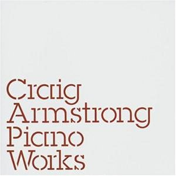

《Piano Works》craig armstrong @ Apr 21, 2008

这个周末听到craig armstrong2004年的专辑《Piano Works》，他的钢琴，慢、冷、飘渺，这种感觉也许跟他弹钢琴本身的节奏慢有关，更重要的是他的混音处理，真实的钢琴弹奏是不会有这种感觉的。这一点也是新生代作曲家比老一辈作曲家，如John Williams，更有优势的地方--他们有了更多的作曲工具，更容易实现所需的目标。
《Piano Works》感觉像是在Brian Eno的清汤白水里面加了一些忧郁、阴森的成分，宏大的具有隐忍的伤感，再一看这张碟封面里附着的照片:巴黎卢浮宫灰暗的傍晚、石雕翅膀冰冷的一角、工厂水泥建筑苍白的远摄...与这张专辑营造的氛围相得益彰，尤其在下着雨的夜晚，几乎所有隐藏着的情绪全被《Piano Works》挖掘出来，复杂深沉又极其细腻，还有沉淀...遐想...无奈...幻灭...时空...矛盾...无语与纠葛，第7首 “Leaving Paris”很喜欢，craig armstrong真是营造氛围的牛人，希望能购买到craig armstrong所有的专辑。
Ray Charles说：“将生命的重心放在精神力量上，这无疑是一种生活方式，然而，它却是你所能面对的最艰苦道路。”----《Ray》
1 Responses to “《Piano Works》craig armstrong”
2008-04-21
美洲菊
很喜欢你的图片
Leave A Reply
存档只读，评论已关闭。